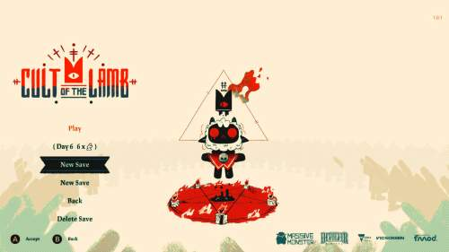
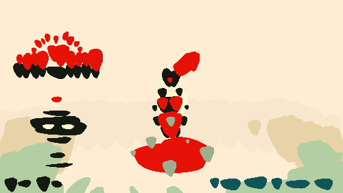
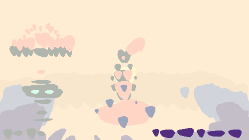
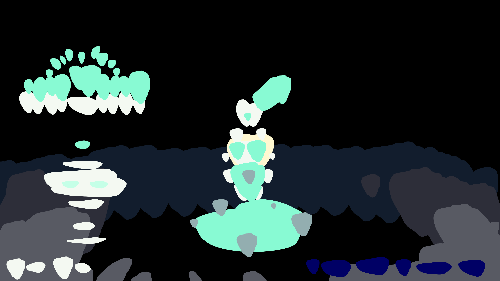
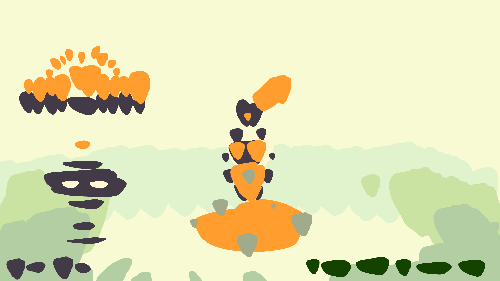

The image above is a promotional image for the game Cult of the Lamb. Isn't it really cute and colorful? I love the variety of colors the flowers come in (and let's just ignore that skull yeah?). The game a mix of a life sim. and rougelike -- and my current favorite. One of the main reasons being that its aesthetics absolutely do not match its themes.
For example, here's the main title screen when you boot up the game! The name is very indicative of the game's main plot: you are a lamb running a cult -- and all the violently horrible things you can imagine come with that. The cute, round visuals are alluringly ironic and help disguise a bit of the atrocities that happen in there. Only when you actually commit to playing the game does it stop hiding and (literally) show its true colors with its landing page.
The dominant colors in this interface are red and black -- very satanic and cult-like. But arguably, ignoring the neutral beige-ish filler color, its secondary color is a teal blue. This would make the colors almost a complementary color scheme, but not quite because the green is more of a teal. And I think this plays wonderfully with the themes the designers were working with: a cult should feel very unsettling, so color choices that don't quite fit the established mold of color combinations is perfect. With this analysis, I started wondering how different color pallettes would impact the delivery of this opening screen of the game. So here's a mockup of this screen that removes a lot of the details to let us focus on the main message of the colors.
As we can see, our eyes are drawn towards the red and black. One is the feature image of the title screen, another is the logo, and the rest are navigational buttons -- all things we'd expect should need users' attention the most. The logos of the development and producer teams are relegated to secondary colors. This is because while they deserve to be on the title screen, they aren't what users will want to focus on every time they want to play the game. And the neutral colors do a good job of not being very noisy -- avoiding drawing attention where it shouldn't be. This is also where the supporting blue-ish colors come in handy as they keep eyes towards the bottom of the screen, where a lot of the important visuals are.
Now let's see what happens when we mess with the colors.
In this alteration, I've lightened the primary colors and moved the secondaries closer to purple. With my imbalanced shifting, I've actually accidentially made the main object of attention be in the bottom right corner (the logos) since it's the boldest, most saturated color in the image. The mood of this interface is softened, and closer to an analogous combination -- but still not quite. So it still feels eerie, but not to the extent the original does. It's also not bold, confident like a cult leader's colors should be. I've essentially made a less effective duplicate of the original.
Here I've basically inverted the colors. It's now more of a monochrome color scheme, but doesn't lose as much of that creep factor because of the electric blue. Although, the contrast is very high -- which isn't kind to the eyes and might lead to eye strain when seen repeatedly like a title screen is meant to be...
This final one is mainly shifting around hues, not much adjustments to saturation or lightness. Now it's Halloween! The color scheme is now a triad of the secondaries in the color wheel. (Where the purple is seen as the undertone of the black.) It's spooky in the sense that you know that Halloween colors are supposed to be the "scary" colors, but those are only because of cultural implications. Really, it just looks like a pumpkin.
Overall, I can't argue that the original is the best of these options. It was a polished color pallette with a lot of thought put into it. If I had actually been trying to make a "better" pallette... not much would change. Perhaps it would have more purple undertones rather than blue -- or maybe the red could be shifted towards royal purple. But it would then lose the two best strenghts of the original. The satanic implications of the red and black, and the slightly-to-the-left of complementary secondary are the star players of the pallette that make the mood.
In the end, the original choice is excellent for not only the correct emotions it emotes, but the correct contrast to direct attention from a user interface persepctive. This analysis has only made me appreciate Cult of the Lamb more as a project with a lot of attention put into it. It has the life and personality that makes indie games like it shine compared to triple A products. I might just go play more of it after posting this blog.